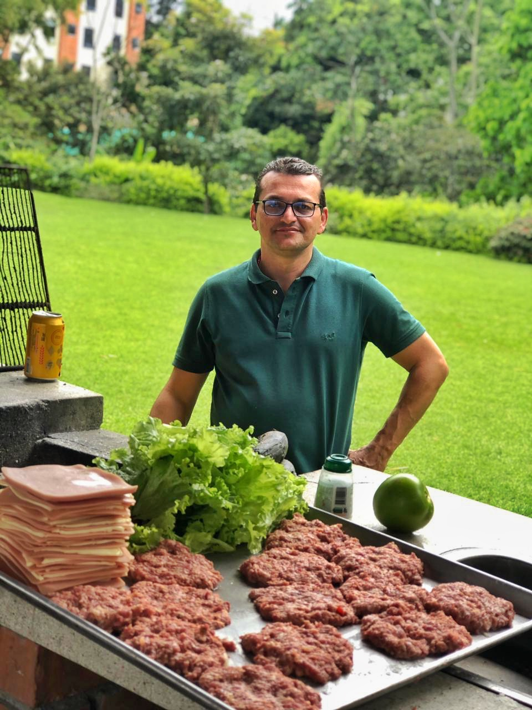

Proyectos de interés
Como estudiante de ingeniería informática, he canalizado mi pasión por la tecnología en proyectos que trascienden el aula. Desde desarrollar aplicaciones para simplificar procesos cotidianos hasta crear plataformas para promover la educación en línea, he buscado constantemente maneras de aplicar mis habilidades para hacer una diferencia positiva en la comunidad. Estos proyectos no solo han sido oportunidades para poner a prueba mis conocimientos, sino también para contribuir al bienestar de aquellos que me rodean.
Conócelo